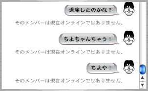

ようやく小田扉の短編集『そっと好かれる』(太田出版)を手に入れました。発売されたと知ってから買いに行く機会がなく、一週間くらいモンモンと過ごしていたのです。長かった。
半分くらいは掲載雑誌や同人誌ですでに読んでいたのですが、改めて読んでもおもしろくてたまりません。同人誌で発表された大傑作「放送塔」も収録されているので、みんな読めばいいと思います。時系列が前後しながら順次挿入される各登場人物の過不足のないエピソード。密度、構成、どれをとってもすばらしくて、初読の時は思わず仰け反ってしまったのでした。
しかし、単行本に収録されているバージョンでは「シンデレラ城」が「観覧車」に差し替えられているのを始めとして、「ミッ…」「あのネズミ型の陽気な生き物もいない」という台詞すら著作権対策が入っており、例の黒ネズミ会社の脅威がはかり知れます。迷惑だなあ。
西原さんと大宮を適当に散策した後、サシで夕食。大宮の店をあまり知らない西原さんから「この間パスタを食ったので、イタリアン以外で。いろいろな地ビールが飲めるとよい」というリクエスト。そんなん僕も知りません！
ソフマップのADSL勧誘コーナーに無理矢理割り込んで検索した(迷惑)地ビール屋は、すでに潰れてなかった(ピチカートファイブ風に)ので、悩んだ挙げ句に、僕が以前行ったことのあるダイニングバーへ記憶を頼りに入店。
入ってみると、そこはビールが生、黒、ハーフの三種類しかなく、おまけにメインはパスタ&ピッツァだったので、あやうく西原さんに殺されそうになったのですが、頼んだ料理がどれも美味くて、何とか事無きを得ました。あぶねぇ。
使ってまだ一週間も経っていないiPodですが、どうにも様子がおかしい。曲を転送する度に特定のアルバムの曲順がころころと変わってしまうのです。同じアルバムが複数個表示されたりもします。
いろいろと原因になりそうなことを考えてみると、曲順が乱れるアルバムには、80文字を超えるような曲名が含まれており、それが長すぎて曲管理テーブルを壊しているのではないかという気がしてきました。
とりあえず曲名を短いものに変更してから、iPodを初期化、iTunes3を再インストール、iTunes3の初期設定およびプレイリストを捨てて作り直す、の３つの合わせ技で何とか復旧しているようです。
初期不良だったらネタになったのに残念だ(嘘です)。しかしまさか曲名のエリアをchar[64]で取っているってことはないよなあ(どうかなぁ)。
<ぶらり撮影、おもしろ写メール>
そうか、癒しコーナーに！
「あの」チキンナゲットの方が美味しいと思います(挨拶)。
昨日は、せっかくだし、MacOSX10.2標準付属のメーラ「Mail」に移行してみたのでした。Mailのメールボックスは、~/Library/Mail/Mailboxes/の下に「メールボックス名.mbox」というファイルで存在しますが、「メールボックス名.mbox」というのは(Finder上ではファイルに見えるけれども)実はディレクトリで、その下に「mbox」という名前でメッセージファイルが置かれるようです。mboxファイルは、もちろんmbox形式で、文字コードはJIS、改行コードはLFです。よって、移行の時は、適当にMailboxes/の下にディレクトリを作ってmboxファイルを入れ、ディレクトリ名に.mbox拡張子を追加しておけば(この時点でアイコンが変わってファイルのように見える)、Mail起動時に自動的にメールボックスが読み込まれるようになります。偉そうに書いてますが、いろんなページを検索して得た知恵です。一応、Mailのメニューからもメールボックスの取り込みが行えるのですが、僕の場合は全部文字化けしました。
売りの機能の一つである迷惑メールのフィルタリングは、だいたい正しい判断をするのですが、上記のように移行したメールでは、特定の人物からのメールがあらかた迷惑メールにされていて、ちょっとおもしろかったです。というか、Apple Developpers Connectionからの情報メールが軒並み迷惑メールになっているのですが、いいんですか？＞Apple
現在は迷惑メールフィルタのトレーニングモードで「これはな…ちゃうねん」と割り箸を割り続ける大阪のように「迷惑メールでない」ボタンを連打している僕です(まぬけ)。
そしてにこるさんを相手に念願のiChatを試してみました(よりによって相手が退席しているシーン)。吹き出しがおもしろいです。

iPodの名前は、悩んだ末にPeytoia(ペユトイア)にしました。ペユトイアとは、アノマロカリスの口単体が誤ってクラゲ類と同定されていた時の学名なのですが、iPodのホイール部分と似ているというのがその理由です(無茶)。
今週も晩飯の食材を買う暇がないと思われるので、週末の間にスーパーの特売コーナで、日持ちしそうなスパイシーチキンナゲット(加工肉)を三日分ほど買っておいたのです。そのスーパーでは、特売を知らせるポップに「あのチキンナゲットよりもおいしいよ！」と大々的に書かれていたのですが、「あの」チキンナゲットが一体何を指しているのか全く分からず、気になって夜も眠れません。どれ！？
マーサ・スチュワート インストール(嘘)
というわけで、MacOSX10.2を導入した環境でこれを書いています。10.1に比べて体感できるほどに動作がキビキビとしています。Finderの動作も細かなところでまともになり、フォルダナビゲーション(ファイルをドラッグした状態でフォルダアイコンに乗せると、次々とフォルダの中身が開かれて深い階層へドロップできるようになる機能)の復活も便利便利でさっそく使いまくっています。ここを読んでる人で、10.2を入れる予定のある人は今すぐにでもインストールして、僕とiChatを試して下さい。試してみたいんです(吹き出しの出る様を)。
昨日秋葉原を見て回ったところによると、MacOSX10.2のコードネームはJaguarというだけあって、販促として各店頭ではジャガーグッズが大量に配られていました。日本で豹柄と言えば浜崎あゆみですが、あゆグッズも販促と称して処分処分、一石二鳥ですなぁと黒い予想を抱いていたのですが、あゆグッズは配られていませんでした(当たり前)。
「ジャガーってトラ？」「え？ジャガーはジャガーですよ」「…ひょう？」「だからジャガーですよ」というあずまんが大王のネタがありますが、配られていたのは概ね豹だった気がします。駄目じゃん(僕の知識の拠り所が)。
先日SofmapでiPodと一緒に豹のぬいぐるみを貰ったんですが、腹がクリーニングクロスになっているという微妙な代物で対処に困っています。とりあえずiPodの背面の金属部を磨こうかと思います。

MacOSX10.2とiPod10Gを買うために秋葉まで出かけました。一週間で貯めた物欲が試される時です。
しばらく前に買ったmp3プレイヤも結構よかったのですが、曲を入れ替えるためには、Classic環境を立ち上げて曲を順番に一つ一つ転送してやらなければならないので、使っていくうちに面倒を感じるようになってしまったのでした。人間ってどんどん贅沢になるんだよね(知った風な口)。
まずは、あのSofmapが珍しく10%ポイント還元をしているMacOSX10.2から確保に向かいます。貯めたポイントは即iPodへ！綿密な計算なのです(iPodがどの店でも1%-2%程度のポイント還元率であり、MacOSX10.2購入時の還元ポイントより少ないことに注意せよ)。
発売日というだけあって店頭では購入キャンペーンを開催しており、MacOSX10.2購入者にはくじ引きのチャンスがあります。外に着ていけないようなジャガー柄のTシャツとか当たっても嬉しくないなあと思いながらも、せっかくだからとくじを引いたところ、なんだか店員がクラッカーを爆ぜらせ始めました。「はーい、iPod 5G当選でーす！」とか言ってます。えーーーーー！！
その時の僕の、びっくりしたような、困ったような表情は相当に見物だったと思います。鳩に豆鉄砲、ミズグチにiPod。

というのはですね、僕が欲しいのは、店頭処分品の、容量が5Gバイトしかなくて、物理的にホイールが回転してしまう旧iPodなんかじゃなくて、新品の、容量が10Gで、ホイールがタッチパッドになっている新iPodなんです！幸運かと言えば、明らかに幸運なんでしょうけど、行こうとしていた道に幸運という名の岩を置かれた感じは否めません。なにをする！
結局、当たったiPodは誰かに売ることにして、当初の予定通り新iPod 10Gを購入したのでした。
そんなわけで、今、家にはiPodが2台あるのです(阿呆)。
おまけ：
現場に居合わせた西原氏の証言：「口は笑ってたけど、目は明らかに困ってた」
現場に居合わせた哲氏のコメント：「一生分の運を使い果たしたね」(僕の人生は5Gバイト分しかないのですか)
買ったにんにくが丸ごと緑色のカビに犯されていたよ。
折り畳みたくなる号(自転車)を修理しました。
折り畳みたくなる号には、組み立てた時に勝手に折り畳ってしまわないように後輪部分に樹脂製のストッパーが付いていたのですが、すっかりポッキリと折れてしまい、それ以降は持ち上げるだけで後輪部分が前輪方向へ折り畳まってしまうヘボ仕様に成り果てていたのでした。
今回、代替の樹脂製パーツが手に入ったのでさっそく取り付けを敢行します。構造は簡単。筒になっているところへ、魚の骨の形をした樹脂製パーツを差し込み、ネジ止めするだけです。
ところが、何回やっても樹脂製パーツは固定されずに筒の中でグラグラと揺れ動き、とてもじゃないけどストッパーの役目は果たしてくれません。こんな単純な組み立てに一体どんな失敗があるというのだろう。付け忘れた部品もないはずだし…。悩みに悩んで、パーツを捏造したりして、グラつかないように隙間を埋めようと勤めたんですが、結果はやっぱり駄目。一体何がどうなってるんですか！
結局、何回も何回も何回も、付けたり外したりしていたら、いつの間にかうまく固定できていました。一体何がどうなったのかサッパリ分かりません。まるで魔法のようだ。
アーサー.C.クラークが言うことには「進歩した技術は魔法と見分けがつかない」らしいので、折り畳みたくなる号は超文明が残したロストテクノロジーで出来ています。下手したら時間だって超えられるかもよ？(オチ：モーロックに食われてThe End)